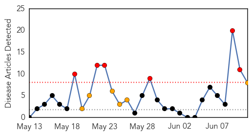

30 Day Trends
Web: 6 alerts, 6 warnings
Twitter: 1 alerts, 0 warnings
Top Articles:
- 0.996
- U.S. Virgin Islands reports 1st locally transmitted case of chikungunya virus
- 0.991
- Health officials: Painful mosquito-borne illness showing up in Tennessee
- 0.990
- DHHS sees 1st case of rare, mosquito-borne virus
- 0.986
- Tennessee Health Officials Investigate Report of New Virus
- 0.978
- New mosquito-borne virus? Tenn. health officials investigate
- 0.948
- Authorities move to prevent Chikungunya in Region Five
- 0.881
- Chikungunya virus causes 40% absenteeism; including hospitals
- 0.654
- NBC-2.com WBBH News for Fort Myers, Cape Coral & Naples, Florida
Top Tweets:
-
No tweets found for Jun 11, 2014
Web/News Articles
Tweets

Article Locations

Article Confidences